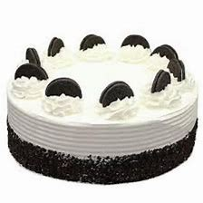
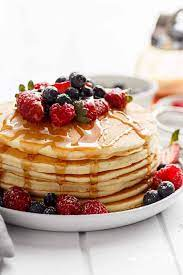

Hello Welcome to The food web!
In this Website i will be introducing you to all different types of Foods you never knew about! We will also be telling you how to make te food we are telling you about!
:]
So lets talk about places you can get food!
- NAMI JAPANESE RESTURAT-Located in Canada,55 Adelaide St E, Toronto ON M5C 1K
- Then we have THE Wok OF FAME-located Canada,7700 Hurontario St, Brampton ON L6Y 4M3
- last but not least UBER EATS- 201 Teaneck Rd, Teaneck, NJ 07666
So now we are going to be learning receipies
First lets learn cakes!
Prepare Baking Pans
Allow Ingredients to Reach Room Temperature
Preheat the Oven
Step Stir Together Dry Ingredients
Step Combine the Butter and Sugar
Step Add Eggs One at a Time
Step 7: Alternate Adding Dry and Wet Ingredients
Step 8: Pour Batter into Pans and Bake

Now we have a very classical but amazing PANCAKES!
Combine flour, sugar, baking powder, and salt in a large bowl. Make a well in the center, and pour in milk, oil, and egg
Heat a lightly oiled griddle or frying pan over medium-high heat

So then we have the one and only FRENCH TOAST!
Gather all ingredients
Whisk milk, eggs, vanilla, cinnamon, and salt together in a shallow bowl
Lightly butter a griddle or skillet and heat over medium-high heat
Dunk bread in the egg mixture, soaking both sides
Transfer to the hot skillet and cook until golden, 3 to 4 minutes per side